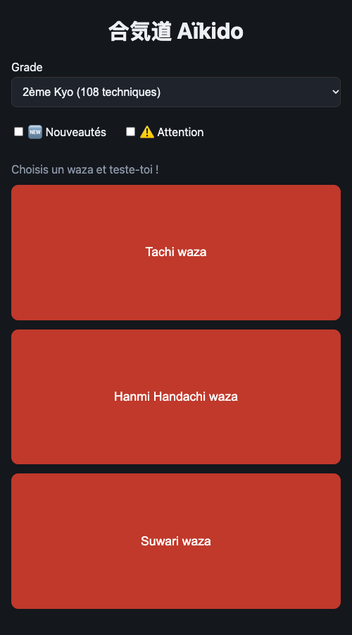
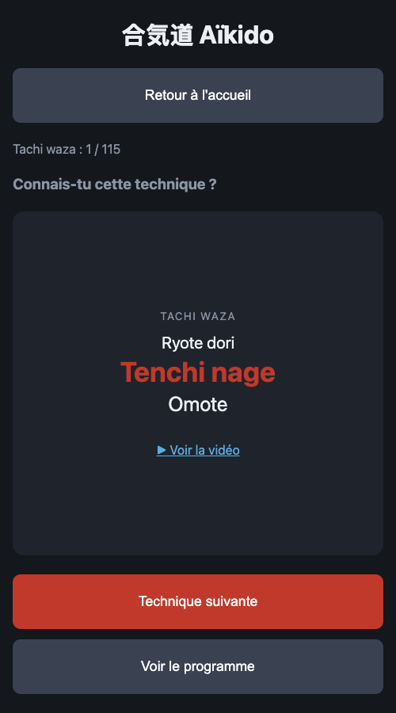
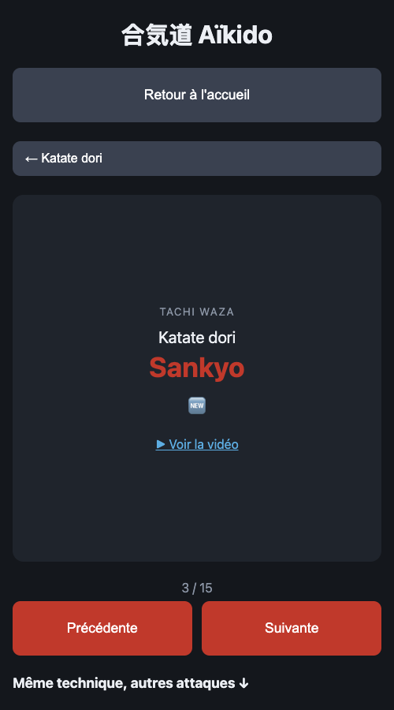
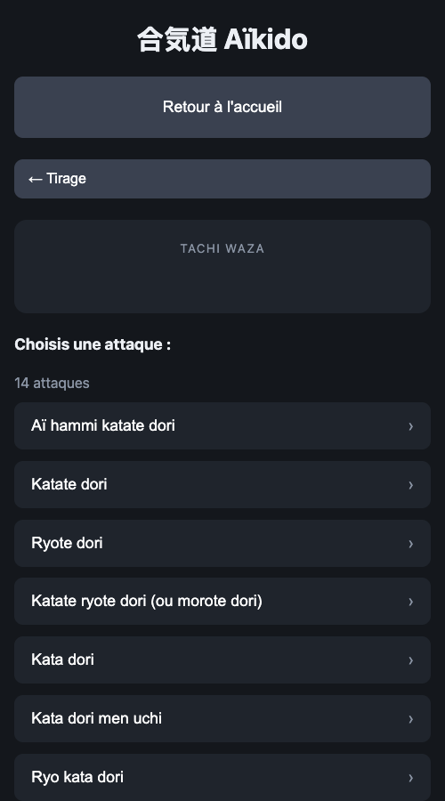
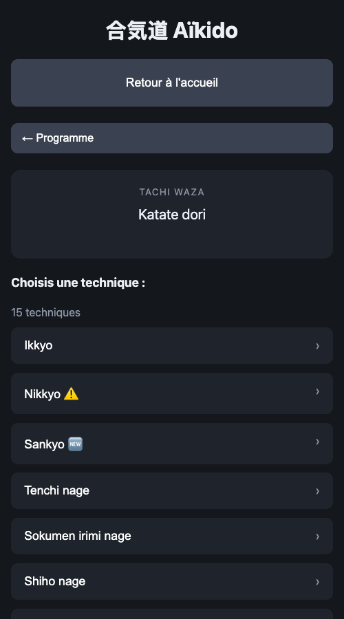

合気道 Aïkido
← Retour à l'applicationManuel d'utilisation
Aïkido Trainer sert à s'entraîner et réviser les techniques d'aïkido : l'app tire au hasard une technique, te laisse réfléchir, puis te donne la suivante.



1. Accueil
- Grade : choisis le grade à réviser (1er, 2ème ou 3ème Kyo). Les grades se cumulent : le 2ème Kyo inclut le 3ème, et le 1er Kyo inclut le 2ème et le 3ème.
- Filtres : 🆕 Nouveautés et ⚠️ Attention. Les deux cochés : l'un ou l'autre ; aucun coché : tout le programme.
- Waza : touche Tachi waza, Hanmi Handachi waza ou Suwari waza pour lancer une session.
2. Tirage
| Élément | Exemple |
|---|---|
| Waza | TACHI WAZA |
| Attaque | Aï hammi katate dori |
| Technique | Nikkyo |
| Forme (si elle existe) | Ura |
| Marqueurs | 🆕 ⚠️ |
| Note, vidéo (si elles existent) | « Naname », ▶ Voir la vidéo |
Le lien « ▶ Voir la vidéo » demande d'abord une confirmation (la technique filmée peut différer de celle attendue au passage de grade) ; une case permet de ne plus afficher ce message.
- Technique suivante : tire la suivante.
- Voir le programme : ouvre le programme sans interrompre la session.
- Retour à l'accueil : termine la session (tu peux aussi toucher le titre « 合気道 Aïkido »).
Le tirage est uniforme sur toutes les combinaisons attaque × technique × forme. Les techniques 🆕 et ⚠️ sortent un peu plus souvent (×1,5 chacune, cumulables). Aucune répétition pendant une session : quand tout est passé, l'app affiche « Waza terminé 🎉 ».
3. Programme


- Attaques : liste du waza.
- Techniques : celles de l'attaque choisie.
- Fiche technique : la carte complète et, en bas, Précédente / Suivante. En défilant, la liste « Même technique, autres attaques » permet de comparer la même technique sur d'autres attaques.
Les boutons « ← … » en haut remontent d'un niveau. Les filtres 🆕/⚠️ ne s'appliquent pas au programme.
4. Navigation
- Glisser vers la droite / la gauche : revenir en arrière / avancer dans l'historique.
- Chaque écran a sa propre URL (
#/2eme-kyo/Tachi%20waza/program/Katate%20dori/Sankyo) : tu peux recharger la page ou partager un lien.
5. Installation et hors ligne
- iPhone / iPad (Safari) : Partager → Sur l'écran d'accueil.
- Android (Chrome) : menu → Installer l'application.
Une fois ouverte une première fois avec du réseau, l'app fonctionne ensuite sans connexion.
← Retour à l'application